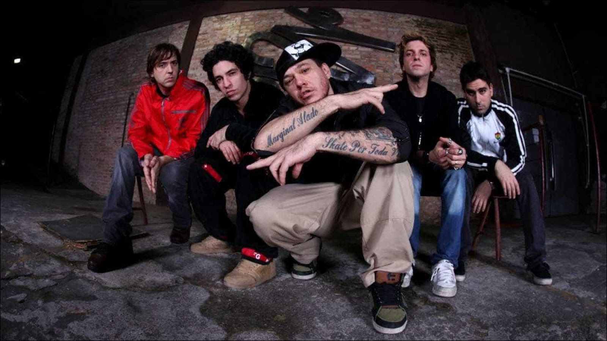
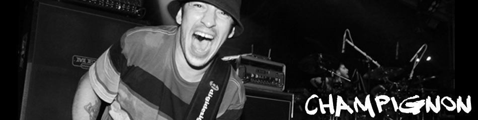

Música Popular Caiçara
Em 1987, o paulistano de dezessete anos Alexandre Magno Abrão, mais conhecido como Chorão, mudou-se para Santos, litoral de São Paulo após uma infância traumática. Passou a se interessar pela prática do skate e teve uma entrada repentina no cenário musical. Um dia, em um bar local, substituiu o vocalista de uma banda, quando este precisou ir ao banheiro. Uma pessoa da plateia, ao vê-lo cantar, fez um convite para integrar sua banda.
Em 1990, quando o baixista saiu, Champignon, com 12 anos, foi apresentado a Chorão por músicos conhecidos que frequentavam o mesmo estúdio que o cantor, em São Vicente, para fazer um teste para baixista. Os dois formaram então a banda What's Up. Não há registros da What's Up disponíveis na internet, mas a banda, segundo relatos, fazia um som semelhante ao thrash metal, hardcore punk e crossover. As letras eram em inglês e a pegada era como a de bandas como Biohazard e Suicidal Tendencies. Os dois tentaram divulgar a banda pela cidade.
Tempos depois Chorão e Champignon decidiram convidar o baterista Renato Pelado, vindo de bandas da cidade como Ecossistema, Jornal do Brasil, entre outros projetos. Mais tarde, Marcão e Thiago Castanho completaram a primeira formação do grupo, que ainda não tinha nome. Daquela época, resta apenas um registro em VHS deteriorado, que foi divulgado pelo guitarrista Marcão, somente em 2017, em uma rede social. Segundo o próprio Marcão, "trata-se de imagens inéditas da gravação do primeiro videoclipe do grupo, gravado de forma independente, que chegou a ser lançado, mas "se perdeu no tempo".
O nome Charlie Brown Jr. só iria ser escolhido em em 1992, quando Chorão, inspirado em um incidente em que atropelou uma barraca de água de coco com o desenho do Charlie Brown. O "Júnior" foi acrescido, nas palavras de Chorão, "pelo fato de sermos filhos do rock", inspirado por músicos do rock brasileiro à época como Raimundos, O Rappa, Nação Zumbi, e Planet Hemp. A sonoridade do grupo tinha influências de grupos como Blink 182, Sublime, Bad Brains, 311, Rage Against The Machine, NOFX e Suicidal Tendencies, misturando hardcore, skate rock, reggae e ska.
Vocalista, compositor, cineasta e empresário.
Alexandre Magno Abrão (São Paulo, 9 de abril de 1970), um dos fundadores do Charlie Brown Jr., está na banda desde 1992 e é o único que sempre permaneceu em todas as formações da banda. Seu apelido de Chorão vem do skate. Certo dia, ele viu os amigos andando de skate, e um deles passou por ele e, para sacaneá-lo, dizia “não chora!”, já que Chorão ainda não sabia andar. Após ter aprendido o esporte, o vocalista participou de várias competições, chegando ao vice-campeonato paulista, e acabou ficando com o apelido.
Chorão além de músico, compositor, é dono de uma pista de skate em Santos/SP, a “Chorão Skate Park” fundada em 6 de novembro de 2005 e de duas marcas de roupa DOCE e PLATA, também escreveu e roteirizou seu primeiro filme em 2007, ‘O Magnata’ e já trabalha para o lançamento do próximo filme prometido para 2012, ‘O Cobrador’.
Baixista, compositor, beat-box man e backing vocal.
Luiz Carlos Leão Duarte Junior (Santos, 16 de junho de 1978), é baixista e um dos fundadores da banda. Seu apelido pegou após uma brincadeira do Chorão que o chamou de Champignon pois seu cabelo crescia para cima e desordenado.
Champignon começou sua carreira aos 6 anos de idade, deu aulas de música e tocou na noite santista até conhecer Chorão e fundar a banda Whats Up, depois eles, juntamente com Pelado, Marcão e Thiago fundaram a banda Charlie Brown Jr.
Champignon foi premiado individualmente como Melhor Instrumentista de 2004 e 2007, pelo Prêmio Multishow, e considerado um dos maiores baixistas de rock do mundo, segundo a revista americana Bass Player-USA, de abril de 2005.
Foi vencedor dos Prêmios de “Banda dos Sonhos” do VMB 2005, VMB 2006 e VMB 2007 da MTV Brasil.
E ainda eleito o melhor baixista de 2002, 2003, 2004 e 2005 pela 89 FM.
Em 2005, Champignon e outros dois integrantes deixaram o Charlie Brown Jr. Neste mesmo ano o baixista reuniu alguns amigos músicos para liderar sua nova banda: Revolucionnários. Em 2006 lançaram o álbum ‘Retratos da Humanidade’. Com o fim do Revolucionnários em 2007 ele manteve um projeto denominado Music Legends onde interpretava músicas de sucesso na noite de São Paulo.
De 2008 a 2009 participou da banda Nove Mil Anjos como baixista e compositor.
Voltou para o Charlie Brown Jr em julho de 2011.
Guitarrista solo, vocal de apoio e produtor.
Thiago Raphael Castanho (Santos, 08 de fevereiro de 1975) entrou no Charlie Brown Jr. em 1992 e, depois de tocar nos três primeiros discos, se desligou da banda em 2001.
Antes de voltar e assumir definitivamente as guitarras do Charlie Brown Jr. no ano de 2005, Thiago montou o estúdio Digital Grooves em Santos/SP, cursou administração de empresas durante seis meses e gravou um Acústico MTV com a banda Ira!. Thiago também fez parte da banda Aliados. Apesar da volta de Marcão, continua sendo o principal responsável pelos solos de guitarra, assim como era há vários anos, quando ainda existia a dupla na banda.
Atualmente, como atividade paralela à música, depois de um período dedicado à pintura, passou a fazer esculturas, envolvendo-se em todo processo de produção desde a modelagem até a fase final de pintura, criando a marca Urban Safari.
Charlie Brown Jr
Transpiração contínua prolongada
1997
Preço curto... Prazo longo...
1999

Nadando com os tubarões
2000
Charlie Brown jr 100% abalando sua fábrica
2000
Nadando com os tubarões
2000
Nadando com os tubarões
2000
Nadando com os tubarões
2000
Nadando com os tubarões
2000
Fan? Drop a note!